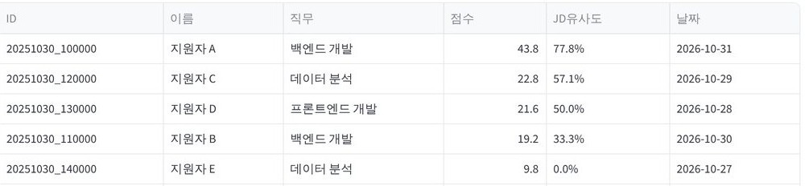
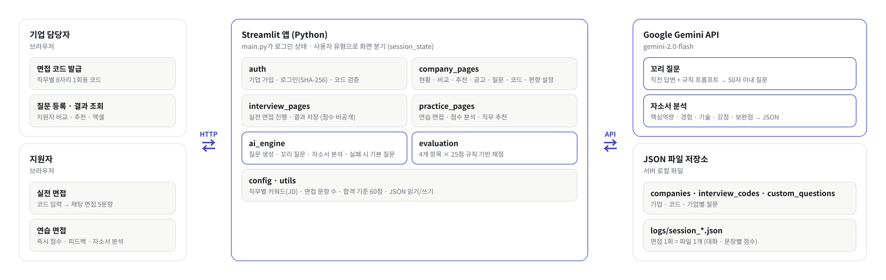
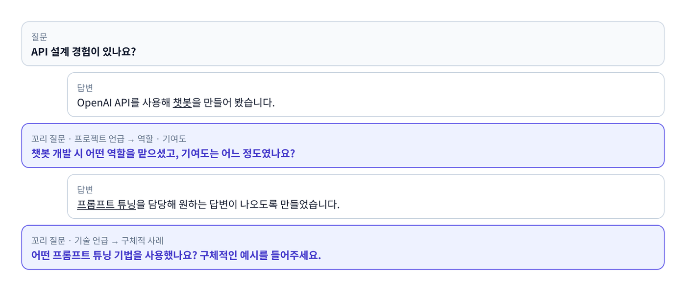
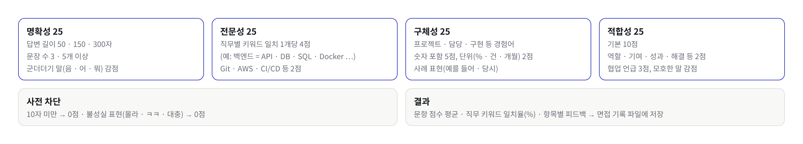

01
개요

문제
- 1차 면접은 면접관 시간이 부족하고, 면접관마다 질문과 채점 기준이 다름
해결
- AI 면접관: Gemini가 직전 답변을 읽고 꼬리 질문
- 자동 채점: 모든 지원자를 같은 기준으로 비교, 4개 항목 점수를 따로 표시
- 두 모드: 기업 실전 면접 + 지원자 연습 면접

02
시스템 구조

1회용 면접 코드기업이 직무별로 발급
8자리 코드, 응시하면 자동으로 사용 처리
AI 실패 대비면접이 끊기지 않게
Gemini 오류 시 직무별 기본 질문으로 대체
점수 비공개실전은 기업에만
연습 면접만 즉시 피드백
내 작업
03
답변 하나마다 꼬리 질문과 채점
면접 1회 흐름
코드 검증8자리 1회용 코드, 사용된 코드는 입장 차단
자소서 분석자소서 앞 2,000자를 6개 항목으로 정리
첫 질문기업 등록 질문 우선, 없으면 핵심역량 맞춤 질문
꼬리 질문직전 답변 + 규칙 3개, 50자 이내 질문
채점길이 · 직무 키워드 · 수치 · 역할 키워드 → 100점
저장5문항 종료 → 기록 파일, 코드 사용 처리


04
설계 포인트
| 설계 | 이유 | 방법 |
|---|---|---|
| Gemini 응답 형식 대응 | AI 답변에 서식 기호가 섞여 올 수 있음 | 서식 기호를 지우고 읽음, 실패하면 기본 분석 결과로 화면 표시 |
| API 오류 시 기본 질문 | 질문을 매번 API로 생성해 오류가 나면 면접이 멈춤 | 직무별 기본 질문 5개로 자동 대체해 5문항 완주 |
| 8자리 1회용 코드 | 실전 면접은 한 번만 응시해야 함 | 기업이 직무별로 발급, 응시하면 사용 처리해 재입장 차단 |
| 기능별 모듈 분리 | 화면 · AI · 채점이 한 파일에 섞이면 수정이 서로 충돌 | 인증 · 화면 · AI · 채점 · 설정을 모듈로 나눔 |